Complete Unit
KS3: Medieval England & The Struggle for Power (1066–1485)
Unit Checklist Tracker
| Lesson Title / Exam Task |
Page |
Do Now |
Tasks |
Review |
Score |
| L1: Lesson 1: 1066 - Why did three men claim one throne, and how did William win? | | / 10 | 〇 | | |
| Exam Question: | | N/A | O | | |
| L2: Lesson 2: Castles, Terror, and the Domesday Book - How did William control England? | | / 10 | 〇 | | |
| Exam Question: | | N/A | O | | |
| L3: Lesson 3: Crown vs Church: Why did Henry II clash with Thomas Becket? | | / 10 | 〇 | | |
| Exam Question: | | N/A | O | | |
| L4: Lesson 4: Magna Carta (1215): A triumph of liberty or a selfish baronial power grab? | | / 10 | 〇 | | |
| Exam Question: | | N/A | O | | |
| L5: Lesson 5: Doom Paintings and Tithes: What was life like in a medieval village? | | / 5 | 〇 | | |
| Exam Question: | | N/A | O | | |
| L6: Lesson 6: 1348: How did the Black Death shatter medieval social order? | | / 10 | 〇 | | |
| Exam Question: | | N/A | O | | |
| L7: Lesson 7: 1381: Why did the Peasants revolt, and did they achieve anything? | | / 10 | 〇 | | |
| Exam Question: | | N/A | O | | |
| L8: Lesson 8: The Wars of the Roses (1455–1485) - How did the medieval era end in blood? | | / 5 | 〇 | | |
| Exam Question: | | N/A | O | | |
| L9: Lesson 9: Assessment: How powerful was a medieval monarch? | | / 5 | 〇 | | |
| Exam Question: | | N/A | O | | |
L1: Lesson 1: 1066 - Why did three men claim one throne, and how did William win?
Learning Objectives
Explain why there was a succession crisis in 1066 and evaluate the claims of the three rivals.
Analyze the sequence of events leading up to the Battle of Hastings.
Evaluate the reasons for William's victory at the Battle of Hastings.
Do Now Activity
Score: / 10
1. What century are we currently studying?
2. Who were the native people living in England before 1066?
3. What was the most important building in a medieval village?
4. What is an heir to the throne?
5. Who was the English King that died in January 1066 without a clear heir?
6. What was the 'Witan' in Anglo-Saxon England?
7. Which group of people were famous for raiding England in longships?
8. Where is Normandy located?
9. What does it mean to claim the throne?
10. What is a power vacuum?
Vocabulary Check
Write a short paragraph using at least FOUR of the vocabulary words below correctly.
Witan | Claimant | Succession Crisis | Feigned Retreat | Shield Wall
On , the King of England, , died. Because he and his wife had never had any children, there was no clear heir to take his place. To make matters worse, Anglo-Saxon customs about who should become king were not clear, and over his 24-year reign, Edward had made promises about the succession to different people at different times.
This created a massive power vacuum, and three powerful rivals stepped forward to claim the throne.
| The Claimant | Portrait | Who was he? | What was his claim (justification)? |
|---|
| Harold Godwinson | 
(Bayeux Tapestry) | The Earl of Wessex and the most powerful, wealthy nobleman in England. A brave warrior and brother-in-law to the dead king. | The Deathbed Promise: He claimed that as Edward lay dying, the King nominated Harold to succeed him. The Witan (the council of English lords) backed him, and he was crowned the very next day. |
| William, Duke of Normandy | 
(Bayeux Tapestry) | The ambitious, ruthless ruler of Normandy (modern-day northern France). A brilliant and highly experienced military commander. | The Old Promise and the Broken Oath: He claimed Edward had promised him the throne back in 1051. He also claimed that Harold Godwinson had visited Normandy in 1064 and sworn a sacred oath on holy relics to help William become king. He got the support of the Pope, turning his invasion into a religious crusade. |
| Haralad Hardrada |  | The legendary, feared Viking King of Norway. One of the most famous and brutal warriors in Europe. | The Viking Agreement: His claim was based on an old, past agreement made between previous kings of Norway and England. If one died childless, the other would inherit both kingdoms. To make his claim stronger, he was joined by Tostig, King Harold’s angry, exiled brother. |
Q1. The Claimants' Pitch (Group Battle)
Imagine you are an adviser to the Witan (the council of English lords) in January 1066. Write a short persuasive speech (3-4 sentences) for ONE of the three claimants (Harold, William, or Hardrada) convincing the lords why they should choose your man to be King.
Hint: Make sure you use their specific historical evidence (like Harold's deathbed promise, William's holy oath, or Hardrada's old Viking treaty) to make your case!
King Harold Godwinson knew he was surrounded. He spent the summer waiting on the south coast with his army, expecting William to sail over from France. But the wind was blowing from the north, trapping William's ships in port.
Then, disaster struck.
.
- Battle of Gate Fulford (20 September): The Vikings met the northern English earls, Edwin and Morcar, and absolutely destroyed their armies, leaving the north wide open.
- Battle of Stamford Bridge (25 September): Hearing of the invasion, King Harold made an incredible military move. He marched his army 190 miles north in just five days. He took the Vikings completely by surprise. In a bloody battle, both Harald Hardrada and Tostig were killed. Harold had won an outstanding victory.
But as Harold celebrated, devastating news arrived:
the wind in the south had changed. William's invasion fleet had landed at Pevensey.
Q2. The Exhaustion Timeline (Why Timing was Everything)
Historians argue that William was incredibly lucky with the weather in September 1066.
1. Calculate the days: How many days did Harold have between fighting the Vikings at Stamford Bridge (25 Sept) and fighting the Normans at Hastings (14 Oct)?
2. Explain the impact: Write a short explanation of how the timing of the two invasions left Harold’s army at a massive disadvantage before the Battle of Hastings even started.
Q3. Tension Timeline
Draw a line graph mapping King Harold's stress levels day-by-day throughout September and October 1066. Label key events such as waiting for the wind, hearing about the Viking invasion, winning at Stamford Bridge, and the Norman landing.
[[SRC_MARKER:Lundefined_Source_3]]
Then Count William came from Normandy into Pevensey... and as soon as they were fit, made a castle at Hastings port. This was then made known to King Harold, and he gathered a great army, and came to meet him at the hoary apple tree. And William came against him unawares, before his people were set in order. But the king nevertheless firmly fought against him with those men who would follow him... There was slain King Harold, and Leofwine the earl, and Gyrth the earl, and many good men; and the French had possession of the place of slaughter.
Source A: The Anglo-Saxon Chronicle for the year 1066
The Anglo-Saxon Chronicle gives us one of the few surviving English perspectives on the events of 1066. It provides a brief but devastating summary of Harold's final stand.
Q4. Source Analysis (Source A)
According to Source A, what was the main reason King Harold lost the battle?
*Hint: Look at the sentence describing how William arrived at the battlefield.*
[[SRC_MARKER:Lundefined_Source_4]]
Source B: The Bayeux Tapestry
Harold’s exhausted army had to turn around and march
to meet the Normans. When the two armies finally met at Senlac Hill near Hastings, it was a battle between two very different styles of warfare.
Phase 1: The Anglo-Saxon AdvantageHarold positioned his troops at the very top of a steep ridge, forming a tightly packed, heavy
shield wall. William's archers fired uphill, but their arrows bounced harmlessly off the wooden shields. William ordered his heavy cavalry to charge up the damp, steep hill, but the English swung massive battleaxes, slicing through Norman horses and riders. The shield wall held firm.
Phase 2: The Rumour and the Feigned RetreatAs the death toll grew, panic spread through the Norman lines. A rumour swept the army that Duke William had been killed. The Breton soldiers on the left began to flee in terror, and some Saxon soldiers broke their own lines to chase them down the hill.
William acted quickly to save his army.
He pushed back his helmet so his men could see his face, shouting that he was still alive. The regrouped Normans turned on the Saxons who had chased them and slaughtered them.
Seeing how easily the Saxons were tempted to leave their high ground, William ordered his men forward to perform a
"feigned retreat". The Normans charged, fought briefly, and then pretended to run away in panic. The Saxons fell for the trick twice. They broke their invincible shield wall to run down the hill in pursuit, only to be surrounded and cut to pieces by the Norman cavalry.
Phase 3: The Fatal Shower and the King's DeathWith the Saxon shield wall broken open, William ordered his archers to fire high into the air so that a rain of arrows poured down on the unprotected Saxons from above.
Late in the afternoon, surrounded by his bodyguard,
King Harold was killed. Whether he was hit in the eye by an arrow or cut down by Norman knights is a mystery. With their leader dead, the surviving Anglo-Saxon soldiers panicked and fled into the surrounding forests.
William, Duke of Normandy, had won the Battle of Hastings.
Q5. Source Analysis (Source B)
Look at Source B (The Bayeux Tapestry). How does this source support the idea that Harold's death was chaotic and brutal?
Q6. Hastings Tactical Analysis (How the Battle was Won)
Copy and complete the flow diagram below to show how the battle shifted in William's favour.
1. Saxon Shield Wall holds firm on the high ground
⬇️
2. Rumour spreads that William is __________. William removes his __________ to prove he is alive.
⬇️
3. The Cunning Plan: William orders a "___________ retreat" to trick the Saxons down the hill.
⬇️
4. Saxon Shield Wall is broken. Archers fire __________, and King __________ is killed.
Q7. The Turning Point Debate (Evaluation)
Look at the list of reasons why William won:
- William's clever tactics (the feigned retreat)
- Harold's mistakes (letting his men chase the retreating Normans)
- Bad luck for Harold (having to fight two invasions at opposite ends of the country)
- William's leadership (keeping his men motivated and organized)
Write a brief paragraph arguing which of these was the single most important reason William won the throne. Use evidence from your notes to justify your choice!
[[SRC_MARKER:Lundefined_Source_5]]
Source C: The Battle of Hastings (19th Century)
Over the centuries, many artists and writers have imagined what the Battle of Hastings looked like. However, as historians, we must always look carefully at when a source was created to decide how useful it is for our research.
Q8. Put these key events of 1066 in the correct chronological order to map out the dramatic sequence of events.
Pair & Share Activity
Prompt: Discuss with your partner: Which of the three claimants do you think had the strongest legal claim to the throne of England, and why?
Think: Spend 1 minute quietly considering the question and forming your own opinion.
Documentary / General Notes
Title / Topic: ______________________________________________________________
L2: Lesson 2: Castles, Terror, and the Domesday Book - How did William control England?
Learning Objectives
Understand how the motte and bailey castle design allowed Normans to quickly establish military dominance.
Evaluate the causes and devastating consequences of the Harrying of the North.
Analyze the purpose and impact of the Domesday Book using local Hampshire records.
Do Now Activity
Score: / 10
1. Which powerful English Earl claimed the throne because of a deathbed promise?
2. Which Viking warrior claimed the throne based on an old treaty?
3. Who claimed the throne because of a broken oath sworn on holy relics?
4. Where did King Harold march his army to fight the Vikings?
5. Who won the Battle of Stamford Bridge?
6. Why was Harold's army exhausted before fighting William?
7. Where did William the Conqueror's army land in England?
8. Who supported William's invasion, making it a religious crusade?
9. What was the name of the battle between Harold and William?
10. In what year did all these three battles take place?
Vocabulary Check
Write a historically accurate sentence connecting two terms from the glossary box below.
Motte | Bailey | Palisade | Harrying | Domesday Book | Shire | Tenant-in-chief
Your Sentence: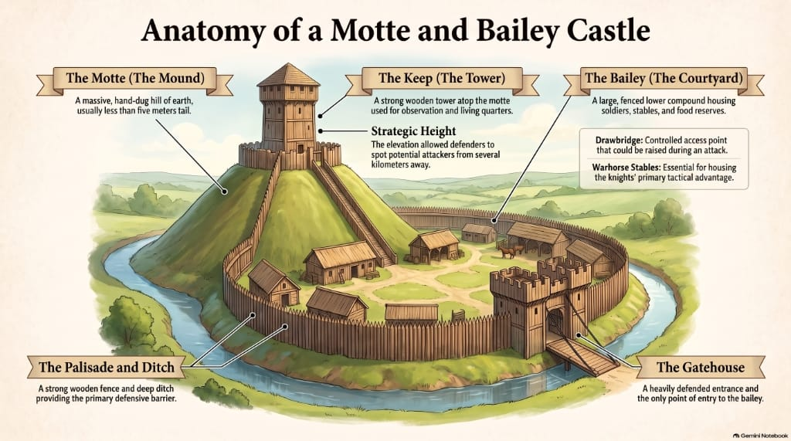
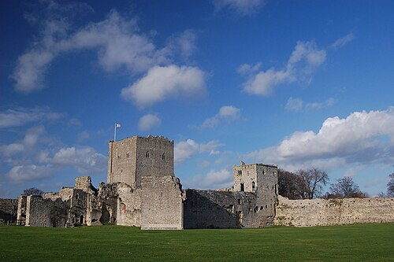
After his coronation on Christmas Day 1066, King William faced a massive problem. He was now the crowned king of England, but he only truly controlled the south-east corner of the country. To secure his grip on a hostile nation of over two million Anglo-Saxons, William relied on a revolutionary military innovation: the castle. The earliest Norman castles were motte and bailey designs. They were built rapidly out of wood, which was essential because the Normans needed defensive bases as quickly as possible. The motte was a massive, hand-dug mound of earth, topped by a wooden tower called a keep. Below this mound lay the bailey, a fenced compound where soldiers lived, stabled their warhorses, and stored weapons. The entire area was protected by a deep ditch and a strong wooden fence called a palisade. These castles were strategically placed at river crossings, major crossroads, and in rebellious towns. Beyond acting as secure military garrisons, castles had a massive psychological impact. They dominated the landscape, serving as a constant, looming reminder to the local Anglo-Saxon population that the Normans were here to stay and that any attempt at rebellion was completely pointless.
Q1. Sketch a Motte and Bailey castle and label the key defensive features (Motte, Keep, Bailey, Palisade, Ditch).
Q2. Task: Look at Source B (Portchester Castle). Why would this towering stone keep be absolutely terrifying for the local English peasants who lived in small wooden huts?
[[SRC_MARKER:Lundefined_Source_1]]
"He killed many people, destroyed the camps of others, harried the land and burned homes to ashes... At the height of his anger he ordered that all the corn and cattle, all farming implements and every sort of provisions and food be collected in piles and set on fire until it was all burnt. Thus was the whole region north of the Humber stripped of everything that could be used to support life."
Source C: An extract from the Ecclesiastical History by the Anglo-Norman monk and chronicler Orderic Vitalis.
While castles kept local areas quiet, they could not prevent massive, coordinated rebellions. The greatest threat to William's reign occurred in 1069, when English rebels in the north allied with a Danish invasion fleet and seized the city of York, butchering the Norman garrison. Faced with the potential loss of his kingdom, William acted with terrifying savagery. He marched his army north and unleashed a campaign of total destruction known as the Harrying of the North. His objective was not just to defeat the rebel armies, but to ensure the north could never rebel again. William ordered his troops to systematically lay waste to the land. They burned entire villages to the ground, slaughtered farm animals, destroyed farming tools, and set fire to food crops and seed reserves. The impact was catastrophic. Stripped of everything needed to support human life, the region fell into a massive famine. Contemporary chronicles estimate that over 100,000 people perished from starvation and cold, and the land between York and Durham was left completely waste. This brutal campaign successfully crushed Anglo-Saxon resistance, but it left a legacy of extreme bitterness.
Q3. Explain why William carried out the Harrying of the North and what the consequences were for the people living in the region.
[[SRC_MARKER:Lundefined_Source_2]]
"The King sent his men all over England, into every shire and had them find out how much land the king, the bishops and the lords had... So very detailed was this investigation that there was no land, no ox, no cow, no sheep nor one pig left out... and all these records were brought to him."
Source D: An extract from the Anglo-Saxon Chronicle, written by contemporary English monks.
By the 1080s, William had defeated the rebellions, but his rule still faced external dangers, particularly the threat of a Danish invasion in 1085. To defend his kingdom, William needed to raise a large army of mercenaries, which required massive amounts of tax money. To find out exactly how much land he controlled and how much tax he could collect, William ordered a complete survey of England at Christmas 1085. Royal commissioners were sent into every shire to record the size and resources of every piece of land. They asked detailed questions about who owned each estate before 1066 under King Edward, who held it now, how many ploughs, animals, and slaves were present, and how much the land was worth. The result was the Domesday Book, presented to William in August 1086. This survey demonstrated William's incredible, centralised power. He now had detailed records of over 13,000 places, allowing him to tax his subjects with maximum efficiency. It also confirmed that almost all Anglo-Saxon noblemen had lost their estates; by 1085, only 13 of the 1,000 major landowners in England were English, showing how completely the old ruling class had been replaced by Normans.
Q4. Create a flow diagram tracking how the Domesday survey was carried out from 1085 to 1086.
Q5. Look at the visual image of the Domesday Book in the Key Individuals section. Why was having all of this information written down in a permanent book so terrifying for the English population?

The Domesday Survey reached every corner of Hampshire, ensuring that even small coastal settlements were accurately recorded and taxed. The manuscript was written in heavily abbreviated Medieval Latin, making it almost impossible to read today without special training. Let's look at the actual entry for Fareham and Stubbington!
Q6. Local History Investigation. Look at the Domesday records for our local area. Explain what resources were recorded in Fareham and what this reveals about how Norman control impacted our local community.
The sheer speed of the Norman Conquest is breathtaking. Review the timeline below to see how William used castles, terror, and administration to completely take over England in just two decades.
- 1066: William crowned King. The great castle-building programme begins.
- 1069-1070: The Harrying of the North crushes northern resistance through starvation and destruction.
- 1071: The last major Anglo-Saxon resistance is defeated at Ely.
- 1085-1086: The Domesday Survey is ordered and completed, recording every taxable asset in England.
- 1087: William the Conqueror dies.
Q7. Review the timeline of William's consolidation of power. Which method (Castles, Terror, or the Domesday Book) do you think was the most effective in securing his control? Explain your reasoning.
Pair & Share Activity
Prompt: Discuss with your partner: Did William conquer England using fear, or using organisation? Which was more important?
Think: Spend 1 minute quietly considering the question and forming your own opinion.
Documentary / General Notes
Title / Topic: ______________________________________________________________
L3: Lesson 3: Crown vs Church: Why did Henry II clash with Thomas Becket?
Learning Objectives
Understand Henry II's motives for appointing Thomas Becket as Archbishop of Canterbury.
Evaluate the reasons for the complete breakdown in relations between Henry and Becket.
Analyze the events of the murder in 1170 and its aftermath.
Do Now Activity
Score: / 10
1. Who won the Battle of Hastings to become King of England?
2. What type of castles did the Normans first build to control England rapidly?
3. What was the 'motte'?
4. What brutal tactic did William use to destroy northern rebellions?
5. What was the purpose of the Domesday Book (1086)?
6. Who was the Viking claimant killed at Stamford Bridge?
7. What material were the first Norman castles made from?
8. What was the 'bailey' in a castle?
9. What does 'feudalism' mean?
10. How many people died of starvation due to the Harrying of the North?
Vocabulary Check
Write a clear definition and a historically accurate sentence for the term: Common Law
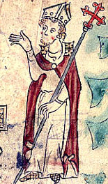
When King Henry II came to the throne in 1154, England was recovering from nearly two decades of civil war known as the Anarchy. Royal authority was weakened, and local barons and churchmen operated with minimal crown supervision. Determined to restore centralised royal control, Henry overhauled the legal system by introducing common law and royal courts. However, Henry encountered a major obstacle: the Catholic Church operated its own separate legal system under Canon Law. Church courts claimed exclusive jurisdiction over anyone who held holy orders. Roughly one-sixth of the male population claimed benefit of clergy, allowing ordained clerks accused of severe crimes like robbery or murder to avoid royal justice. Instead of facing capital punishment or mutilation in royal courts, criminous clerks received lenient punishments such as penance or defrocking in church courts. Henry believed this dual system created an ungovernable realm where churchmen remained above the King's law. To resolve this division, Henry devised what he considered a masterstroke. Following the death of Archbishop Theobald in 1161, Henry appointed his loyal Chancellor and closest companion, Thomas Becket, as the new Archbishop of Canterbury in 1162. Becket had served as an effective, worldly royal administrator who taxed church lands and enforced the King's will. Henry fully expected Becket to hold both titles simultaneously, acting as a royal deputy who would bring the English Church under total crown control.
Q1. Explain why Henry II chose to appoint Thomas Becket as Archbishop of Canterbury in 1162, and explain why this appointment backfired.
[[SRC_MARKER:Lundefined_Source_1]]
"You are my sovereign and my king, but you are also my spiritual son. It is my duty to direct and advise you, not to be commanded by you in matters concerning the divine liberty of Holy Church."
Extract from a letter sent by Thomas Becket in French exile to King Henry II, c. 1166
The relationship between Henry II and Thomas Becket disintegrated rapidly after 1162 as Becket fiercely defended church privileges. Becket insisted that subjecting ordained clergy to secular courts violated canon law and constituted double jeopardy, punishing a clerk twice for the same crime. In response, Henry resolved to formalise traditional royal customs in writing. In January 1164, the King summoned the English bishops and barons to a council at Clarendon, presenting them with the Constitutions of Clarendon. This document contained sixteen distinct clauses designed to curb ecclesiastical power. Crucially, the Constitutions dictated that criminous clerks must be handed over to royal courts for secular sentencing following degradation in church courts. Furthermore, bishops were banned from leaving England or appealing to the Pope in Rome without royal permission, and the King's tenants-in-chief could no longer be excommunicated without crown consent. Under intense pressure and physical threats from royal barons, Becket initially gave verbal consent to the Constitutions. However, once he grasped the full consequences of the clauses, he refused to place his episcopal seal on the document and sought papal absolution for his temporary submission. Furious at this betrayal, Henry summoned Becket to the Council of Northampton in October 1164 on trumped-up charges of financial embezzlement from his time as Chancellor. Realising his life and liberty were in mortal danger, Becket fled in disguise across the English Channel into exile in France.
Q2. Explain the main reasons why the relationship between King Henry II and Archbishop Thomas Becket broke down completely between 1162 and 1164.
[[SRC_MARKER:Lundefined_Source_2]]
"The wicked knight sprang upon him and sheared off the top of his crown which the holy chrism had dedicated to God... Then with another blow on the head he fell upon the pavement, saying, 'For the name of Jesus and the protection of the Church, I am ready to embrace death.' Then the third knight scattered his brains with the point of his sword across the stone floor."
Extract from the chronicle of Edward Grim, c. 1174–1177
Q Task 3: Source Inference (Source C)
Look at Source C. Make two inferences about how the monk who witnessed the murder viewed the knights who killed Thomas Becket. Support each inference with a detail from the source.
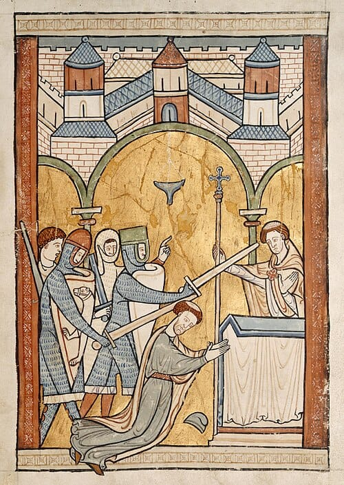
In 1170, the six-year feud reached a critical breaking point. Desperate to secure his succession, Henry had his eldest son crowned by the Archbishop of York, directly violating Canterbury's ancient privilege of crowning English monarchs. Fearing papal interdict, Henry agreed to a superficial reconciliation with Becket at Fréteval in July 1170, allowing Becket to return to England. However, upon landing in December 1170, Becket immediately published papal bulls excommunicating the Archbishop of York and the bishops who participated in the coronation. When news of this defiance reached Henry II at his court in Normandy, the King flew into a notorious rage, allegedly shouting: "Will no one rid me of this turbulent priest?" Taking these words as a royal command, four household knights—Reginald FitzUrse, William de Tracy, Hugh de Moreville, and Richard le Breton—crossed the English Channel. On 29 December 1170, the knights confronted Becket inside Canterbury Cathedral. When Becket refused to submit or flee, the knights struck him down with swords before the altar, splitting his skull. The brutal assassination horrified Christendom, turning Becket into an immediate international martyr. Pope Alexander III canonised Becket as a saint in 1173. Facing widespread outrage, rebellion, and threatened excommunication, Henry performed a humiliating public penance in July 1174. Walking barefoot through Canterbury in sackcloth, Henry knelt at Becket's tomb and allowed himself to be flogged by eighty monks, formally revoking the controversial Clarendon clauses on criminous clerks.
Pair & Share Activity
Prompt: Discuss with your partner: If you were King Henry II, would you have appointed your best friend as Archbishop, or a deeply religious monk?
Think: Spend 1 minute quietly considering the question and forming your own opinion.
Documentary / General Notes
Title / Topic: ______________________________________________________________
L4: Lesson 4: Magna Carta (1215): A triumph of liberty or a selfish baronial power grab?
Learning Objectives
Understand the multiple reasons for the barons' anger towards King John by 1215.
Analyze the key clauses of Magna Carta and how they limited absolute royal power.
Evaluate whether Magna Carta was a triumph of liberty or a selfish baronial power grab.
Do Now Activity
Score: / 10
1. Which king introduced common law and royal courts in 1154?
2. Who did Henry II appoint as Archbishop of Canterbury?
3. Why did Henry and Becket clash?
4. What happened to Thomas Becket in 1170?
5. What did the Pope do to Henry II as punishment?
6. Who won the Battle of Hastings?
7. What was the Domesday Book?
8. What is a 'criminous clerk'?
9. Why did Henry II walk barefoot through Canterbury being whipped?
10. What is a motte and bailey?
Vocabulary Check
Write a short paragraph using at least FOUR of the vocabulary words below correctly.
Angevin Empire | Scutage | Papal Interdict | Magna Carta | Clause 39 | Habeas Corpus
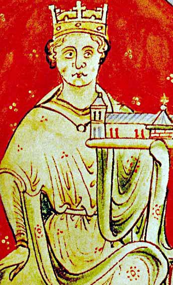
King John inherited a vast Angevin Empire when he took the English throne in 1199, but a succession of military disasters and political misjudgements rapidly undermined his authority. In 1204, French forces under King Philip II conquered Normandy and seized control of Aquitaine, dealing a humiliating blow to John's prestige and leaving him with the mocking nickname 'Softsword'. Determined to recapture his lost continental territories, John embarked on an aggressive campaign of heavy taxation. He ruthlessly exploited his feudal rights by imposing massive scutage fees on barons who refused to provide knights, increasing inheritance taxes, selling court offices, and levying extortionate fines. His military efforts culminated in catastrophic defeat at the Battle of Bouvines in 1214, which wasted vast amounts of baronial wealth without regaining Normandy. Simultaneously, John clashed with Pope Innocent III over the appointment of Stephen Langton as Archbishop of Canterbury. When John refused the Pope's choice and confiscated church lands, Innocent placed England under a Papal Interdict in 1208, shutting churches and halting baptisms, marriages, and burials. John was excommunicated in 1209, alienating deeply religious subjects. By 1215, having bankrupted the nobility, lost ancestral lands, and alienated the Church, John faced widespread mistrust and fury from the English barons.
Q1. King John was a disastrous ruler. Match his failures to the correct category.
[[SRC_MARKER:Lundefined_Source_1]]
"No free man shall be seized or imprisoned, or stripped of his rights or possessions, or outlawed or exiled, or deprived of his standing in any way, nor will we proceed with force against him, or send others to do so, except by the lawful judgement of his equals or by the law of the land."
Extract from Clause 39 of the Magna Carta, June 1215
By May 1215, baronial fury erupted into open rebellion. Approximately forty northern and eastern barons, led by Robert Fitzwalter, renounced their feudal allegiance to King John and marched on London. With the vital support of the city's merchants, the rebel barons captured the capital, leaving John with only a handful of loyal knights and forcing him to enter negotiations. On 15 June 1215, the two sides met at Runnymede, a meadow near Windsor, where John agreed to terms and affixed the Great Seal to Magna Carta (the Great Charter). The document contained 63 clauses designed to place clear legal limits on royal autocracy. Crucially, Clause 12 and Clause 14 established that the king could not levy scutage or exceptional taxes without the 'common counsel' of the Great Council of barons. Clause 39 established foundational legal protections, guaranteeing that no free man could be imprisoned, dispossessed, or harmed except by the lawful judgement of his peers or the law of the land. Furthermore, Clause 61, known as the 'security clause', created an elected committee of 25 barons authorized to monitor the king, seize royal castles, and overrule John if he broke the terms, establishing the radical principle that the crown was subject to the law.
Q2. The Baron's Lawyer. Magna Carta contained 63 clauses. Below are three of the most famous. Categorize them into 'Financial', 'Legal', or 'Royal Power' limitations:
1. 'No freeman shall be arrested or imprisoned without a fair trial.'
2. 'No scutage (tax) shall be imposed without the general consent of the realm.'
3. 'The English Church shall be free from royal interference.'
[[SRC_MARKER:Lundefined_Source_2]]
"Magna Carta was not a deliberate blueprint for universal human rights; it was a pragmatic, conservative settlement designed by powerful barons to protect their own feudal privileges, property, and wealth from an extractive king. Yet, in binding the Crown to the rule of law, they inadvertently built the scaffolding for modern liberty."
Adapted from modern historical scholarship on the 1215 settlement
The peace agreed at Runnymede collapsed almost immediately. King John had sealed the charter under duress and had no intention of abiding by its restrictions, particularly Clause 14 and Clause 61. Within two months, John appealed to Pope Innocent III, who declared Magna Carta null, void, and an insult to God-given royal authority. The First Barons' War broke out as rebel barons invited Prince Louis of France to seize the English throne. However, John's sudden death from illness in October 1216 dramatically changed the situation. To secure support for John's nine-year-old son, King Henry III, the royal council re-issued a revised version of Magna Carta in 1216 and again in 1217 and 1225. By confirming that monarchs ruled under statutory law, subsequent medieval kings regularly reaffirmed the charter to secure taxes from Parliament. Over centuries, clauses intended primarily to protect a narrow feudal aristocracy were reinterpreted. The charter evolved from a 1215 peace treaty between an angry nobility and a weakened king into a global cornerstone of constitutional liberty, influencing the English Bill of Rights, the United States Constitution, and the Universal Declaration of Human Rights.
Q3. The Trial of King John (Interpretation)
Divide your answer into two parts:
1. You are King John's defense lawyer. Write a short paragraph defending his actions, explaining why the heavy taxes were necessary.
2. Now, act as the Barons' prosecutor. Write a response arguing why his actions were tyrannical and justified the Magna Carta.
Pair & Share Activity
Prompt: Discuss with your partner: Do you think the Magna Carta was about freedom for all people, or just the barons protecting their own wealth?
Think: Spend 1 minute quietly considering the question and forming your own opinion.
Documentary / General Notes
Title / Topic: ______________________________________________________________
L5: Lesson 5: Doom Paintings and Tithes: What was life like in a medieval village?
Learning Objectives
Understand the daily agricultural routine and living conditions of a medieval villein.
Explain how the Catholic Church maintained absolute control over peasant life.
Vocabulary Check
Write a historically accurate sentence connecting two terms from the glossary box below.
Villein | Tithe | Doom Painting | Purgatory | Harvest
Your Sentence:
[[SRC_MARKER:Lundefined_Source_0]]
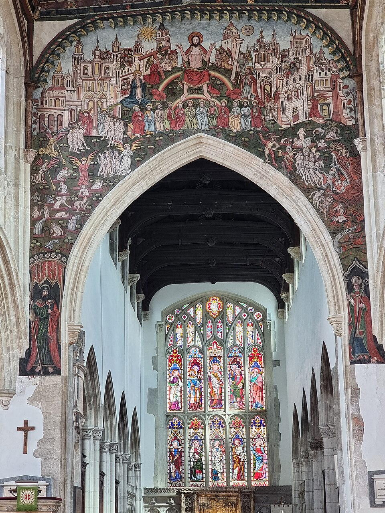
Source A: A depiction of a busy medieval parish church.
In medieval England, nearly everyone lived in small countryside villages called manors. For these ordinary peasant farmers, life was a physical and desperate struggle for survival. Crop failures, freezing winters, and epidemics meant that death was an everyday reality, and many died before their fortieth birthday.
In the midst of this harsh existence, the
parish church was the absolute heart of the community. It was the largest and most impressive building in the village, towering over the peasants' simple wooden cottages. The church bells rang out to mark the hours of the working day, pacing the villagers' lives from sunrise to sunset.
However, the church was not just a house of worship; it was also the local community centre. In medieval times, churches had no pews or fixed seating, creating a large, open, weatherproof space. During the week, villagers used the nave of the church to hold markets, trade goods, share news, and watch travelling actors perform plays. Fairs and feasts were even held in the churchyard, making the church the central hub for both work and play.
Q1. Explain why the parish church was the most important building in a medieval village, referencing both its religious and community uses.
Q2. Task: Look at Source A (The Medieval Church Interior). List three different activities taking place in the church other than praying.
Q3. Task: Look at Source A (the medieval parish church). Identify three different activities taking place inside the church, showing that it was used for more than just praying.
[[SRC_MARKER:Lundefined_Source_1]]
"Received from the manor of Elton for the year 1342: From John the Miller, 3 bushels of wheat. From Thomas the Smith, 2 lambs and 1 fleece of wool. From Agnes the Widow, 20 eggs and a basket of vegetables. All submitted to the tithe barn under the authority of the parish priest on the feast of Michaelmas."
Source B: A medieval record detailing the collection of church tithes from peasant families.
The Church was not just a spiritual guide; it was also a massive, incredibly wealthy landowner, owning around
one-third of all the land in England. To maintain this wealth and support the local clergy, the Church collected a compulsory tax from every single villager, known as a
tithe.
A tithe required every ordinary peasant to give
10 per cent of their annual harvest or goods produced—such as grain, wool, vegetables, or livestock—directly to the parish priest. For a poor peasant family living on the edge of starvation, losing a tenth of their food was a heavy burden that could mean the difference between surviving the winter or starving.
While some parish priests were generous and supported the poor with their own goods, many villagers felt resentful. They saw bishops, abbots, and monks living in luxurious stone monasteries while ordinary people struggled to feed their families. This caused growing criticism that the Church cared more about money than saving souls.
Q4. Describe what a tithe was, how it was collected, and why it caused tension between ordinary medieval peasants and the Church.
[[SRC_MARKER:Lundefined_Source_2]]
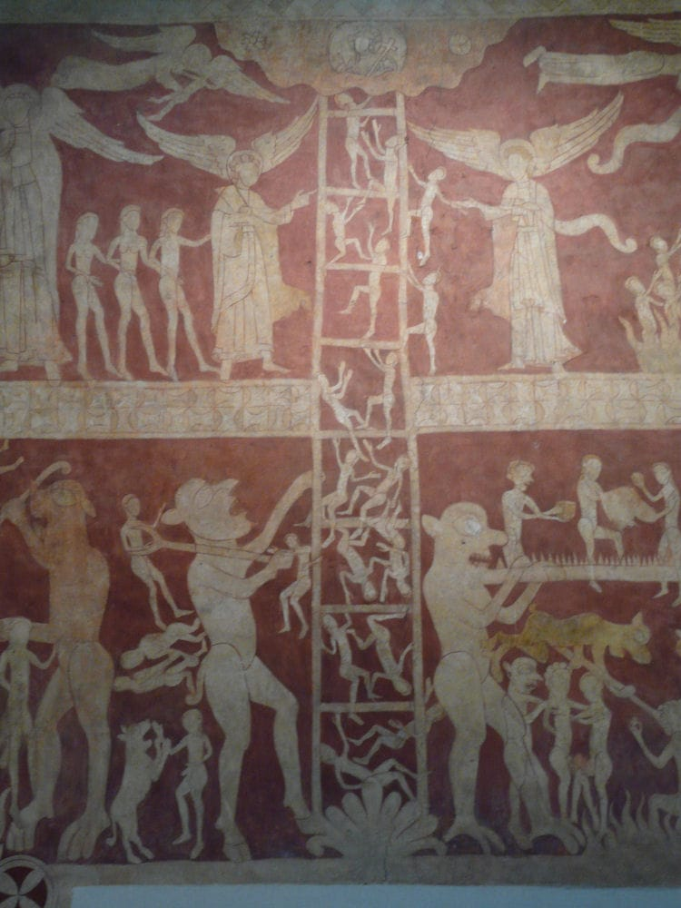
Source C: The famous medieval Doom Painting at Chaldon Church, Surrey, dating from around 1200.
Medieval peasants lived in a highly superstitious world. They believed that God was directly responsible for everything in their lives, from healing the sick and sending good harvests to punishing sins with plagues and famines. Above all, they believed that Heaven and Hell were real, physical places, and that their souls would spend eternity in one of them after death.
Because almost no peasants could read or write, and the church services (the Mass) were conducted entirely in
Latin, the Church used visual aids to teach its messages. The most powerful of these was the
Doom Painting. Painted in bright, terrifying colours on the walls of the church, these murals showed a vivid picture of the Day of Judgment.
Typically, a Doom Painting showed Christ judging souls . In the centre, a ladder stretched from Earth, with souls trying to climb to Heaven at the top, where angels welcomed them . Below, terrifying demons with pitchforks were shown dragging sinners into the burning, torturous fires of Hell . These paintings played on the peasants' deepest fears, delivering a simple and clear warning: obey the Church, confess your sins to the priest, pay your tithes, or face eternal agony.
Q5. undefined
Q6. Task: Sketch your own terrifying Doom Painting monster (Hellmouth or demon) that would have scared medieval peasants into obeying the Church.
Pair & Share Activity
Prompt: Discuss with your partner: Why was the Church able to take a tenth (tithe) of a peasant's crops when they were already starving?
Think: Spend 1 minute quietly considering the question and forming your own opinion.
Documentary / General Notes
Title / Topic: ______________________________________________________________
L6: Lesson 6: 1348: How did the Black Death shatter medieval social order?
Learning Objectives
Understand why the medieval population was medically and socially defenseless against the Black Death in 1348.
Explain how the severe labor shortage shifted economic power from the nobility to the peasantry.
Analyze the long-term structural and psychological breakdown of the feudal system.
Do Now Activity
Score: / 10
1. Which king lost Normandy and Aquitaine to the French?
2. What mocking nickname was given to King John?
3. Why were the barons angry with King John?
4. What document was King John forced to seal in 1215?
5. What was the most important principle of Magna Carta?
6. Where was Thomas Becket murdered?
7. What does 'excommunication' mean?
8. Who built the first motte and bailey castles in England?
9. What was the Harrying of the North?
10. What did Henry II want to stop Church courts from doing?
Vocabulary Check
Write a clear definition and a historically accurate sentence for the term: Bubonic Plague
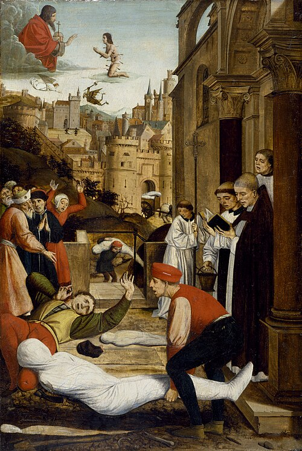
In the summer of 1348, the Black Death arrived along the southern coast of England aboard trading ships carrying goods and infected fleas from continental Europe. Within months, this catastrophic epidemic spread relentlessly inland, attacking towns, ports, and rural villages alike. Victims suffered horrifying symptoms from two main strains of the disease: bubonic plague caused agonizing, pus-filled swellings called buboes in the armpits and groin, accompanied by high fevers, vomiting, and black blotches under the skin, while the deadlier pneumonic strain attacked the lungs, causing victims to cough blood and die within days. Medieval medical knowledge was entirely powerless against the disease because germ theory did not yet exist. Instead, people blamed supernatural and environmental causes, believing the pestilence was a divine punishment sent by God for human sin, the result of unusual planetary alignments, or caused by miasma—corrupt, foul-smelling air rising from filth and waste. In desperate attempts to save themselves, people prayed, went on pilgrimages, whipped themselves as flagellants, and burned sweet-smelling herbs, but none of these measures worked. Sweeping across a population already weakened by prior famines, the plague killed between a third and a half of England's entire population, wiping out entire communities and leaving thousands of corpses to be buried in mass plague pits outside towns.
Q1. The Plague Doctor. Play the role of a medieval physician and try to cure the infected patients.
[[SRC_MARKER:Lundefined_Source_1]]
"Because a great part of the people, and especially of workmen and servants, late died at the pestilence, many seeing the necessity of masters, and great scarcity of servants, will not serve unless they may receive excessive wages... We have ordained that every man and woman in our realm... shall be bounden to serve him which shall require him, and take only the wages, livery, or salary, which were accustomed to be given in the places where he oweth to serve, the twentieth year of our reign of England [1346]."
Extract from the Statute of Labourers, 1351
The sudden death of roughly a third to half of England's population between 1348 and 1350 triggered an unprecedented economic earthquake. With millions dead, the country faced a catastrophic shortage of agricultural labor. Crops rotted in unharvested fields, livestock roamed untended, and manorial land lay completely abandoned. Surviving peasants and laborers quickly recognized that their work was now in immense demand. Realizing that landowners were desperate for workers to prevent financial ruin, peasants began demanding significantly higher cash wages and lower rents, while many free laborers deserted their native villages to seek the highest-paying employers across the country. This radical shift in economic leverage deeply alarmed the English nobility and wealthy landowners. In 1351, King Edward III's government intervened on behalf of the ruling classes by passing the Statute of Labourers. This emergency legislation ordered that wages be frozen at pre-plague rates (1346–1347 levels), made it illegal for peasants to refuse agricultural work or leave their lords' lands, and imposed harsh fines and imprisonment on any worker demanding higher pay or any lord offering it. However, because the labor shortage remained severe, many lords secretly ignored the law and paid higher wages to keep their estates running.
Q2. Explain how the Black Death transformed the balance of economic power between lords and peasants after 1348.
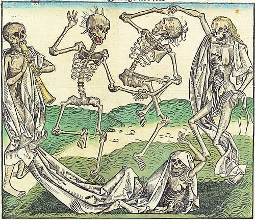
The long-term aftermath of the Black Death permanently shattered the social foundations of medieval England. Villeins (serfs) who had once been legally bound to a lord's demesne increasingly threw off their feudal obligations. Rather than performing unpaid labor service, surviving peasants bought their freedom, rented land, or purchased vacant demesne plots, gradually forming a rising class of independent, prosperous tenant farmers known as yeomen. By the late fourteenth century, the rigid hierarchy of feudalism was effectively in terminal decline. Alongside this social restructuring came a profound psychological and cultural shift. Facing the constant, unpredictable threat of recurring plague outbreaks, society developed a morbid fascination with mortality, most vividly captured in the Danse Macabre (Dance of Death) art motif, which depicted dancing skeletons dragging away popes, monarchs, knights, and peasants alike to illustrate that death made all social ranks equal. Furthermore, popular respect for the Catholic Church deteriorated sharply. The clergy had proven completely incapable of preventing the plague, while thousands of experienced priests had died and were replaced by poorly educated novices, fueling public disillusionment and religious criticism that laid the groundwork for radical preachers and the Peasants' Revolt of 1381.
Q3. The Plague Doctor's Diary (Empathetic Writing)
Write a diary entry as a physician in 1348. Explain the horrifying symptoms you are witnessing in your patients, the 'cures' you are attempting to use (such as bloodletting or carrying sweet-smelling herbs), and why you believe they are failing due to your lack of germ theory.
Pair & Share Activity
Prompt: Discuss with your partner: If you were a peasant who survived the Black Death, how would your attitude towards the local lord and the Church change?
Think: Spend 1 minute quietly considering the question and forming your own opinion.
Documentary / General Notes
Title / Topic: ______________________________________________________________
L7: Lesson 7: 1381: Why did the Peasants revolt, and did they achieve anything?
Learning Objectives
Identify the long-term economic and short-term political causes of the Peasants' Revolt.
Analyze the extent of the threat posed by the rebels when they captured London.
Evaluate the immediate outcome and long-term consequences of the revolt.
Do Now Activity
Score: / 10
1. In what year did the Black Death arrive in England?
2. What fraction of the English population was killed by the plague?
3. What were 'buboes'?
4. Why couldn't medieval doctors cure the plague?
5. What supernatural reason did people blame for the plague?
6. What document limited King John's power in 1215?
7. Who was murdered by four knights in 1170?
8. Why did King John charge heavy 'scutage' taxes?
9. What was the Domesday Book used for?
10. Who won the Battle of Stamford Bridge in 1066?
Vocabulary Check
Write a short paragraph using at least FOUR of the vocabulary words below correctly.
Poll Tax | John Ball | Wat Tyler | Simon Sudbury | Smithfield | Manorial Rolls
[[SRC_MARKER:Lundefined_Source_0]]
"My friends, the state of England cannot be right until everything is held in common and there is no difference between nobleman and peasant and we are all as one. Why do nobles lord it over us? We are all descended from our first parents, Adam and Eve, so how can they be better men than us?"
Extract from a sermon by John Ball, recorded in Jean Froissart's Chronicles
For decades before 1381, deep social discontent had been simmering across the English countryside. Following the catastrophic Black Death of 1348, an acute labour shortage enabled surviving peasants to demand higher wages and seek their freedom. In response, King Edward III’s government passed the Statute of Labourers in 1351, which attempted to freeze wages at pre-plague rates, force labourers to work, and reaffirm the lords' feudal rights. While this law held back wages temporarily, peasant resentment grew steadily. This anger was stoked by radical itinerant preachers like John Ball, who preached that all human beings were created equal before God, famously asking: "When Adam delved and Eve span, who was then the gentleman?" The immediate spark came under the young King Richard II. To fund the failing and expensive Hundred Years' War against France, Parliament levied three successive Poll Taxes between 1377 and 1380. Unlike traditional property taxes, the third Poll Tax of 1380 demanded a flat rate of 12 pence (one shilling) from every person over fourteen, regardless of wealth. This placed an intolerable financial burden on the poorest villagers, uniting long-standing grievances over wages, serfdom, and royal governance into open fury.
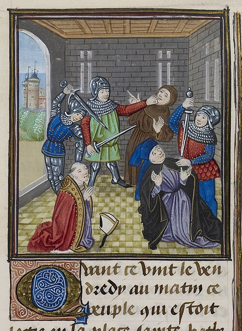
In May 1381, violence erupted in the Essex village of Fobbing when villagers violently expelled a royal tax commissioner. Within weeks, the rebellion spread rapidly across Essex, Kent, Hertfordshire, Suffolk, and Norfolk. The Kentish rebels chose Wat Tyler as their charismatic military leader, broke open Maidstone prison to free John Ball, and began a disciplined march toward London. Along the route, rebel bands deliberately targeted manorial rolls and government tax registers, burning them in massive bonfires. By mid-June, tens of thousands of rebels encamped outside the capital at Blackheath and Mile End. Terrified, the fourteen-year-old King Richard II and his council retreated into the safety of the Tower of London. Sympathetic Londoners opened the city gates, unleashing immense destruction. The rebels burned down the Savoy Palace—the opulent residence of the King's uncle, John of Gaunt—and ransacked legal centres like the Temple. Shockingly, while Richard was meeting Wat Tyler at Mile End to hear grievances, a rebel faction stormed the Tower of London, dragged out the hated Archbishop of Canterbury, Simon Sudbury, and the King's Treasurer, Robert Hales, and summarily beheaded them on Tower Hill.
Q2. How much of a threat did the rebels actually pose to King Richard II and royal government when they seized London in June 1381?
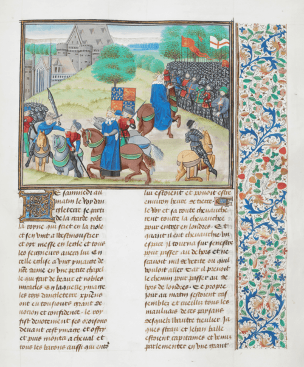
On 15 June 1381, King Richard II agreed to meet Wat Tyler and the remaining rebels at Smithfield market. Tyler presented radical demands, including the total abolition of serfdom, the reduction of baronial estates, and the division of church property among the common people. Richard agreed, but during the tense negotiations, an altercation flared up. The Mayor of London, William Walworth, believing Tyler was threatening the King, drew his sword and fatally wounded the rebel leader. As the enraged peasants drew their bows, the young King saved himself through remarkable composure: he rode directly toward the crowd, shouting, "I will be your captain! Follow me!" He led them away to Clerkenwell, reaffirmed his promises of freedom, and persuaded them to disperse peacefully. Once the capital was clear, Richard ruthlessly broke his pledges. Royal troops swept through Essex and Kent, hunting down and executing hundreds of rebels, including John Ball and a mortally wounded Tyler. Declaring "Villeins you are and villeins you shall remain," Richard revoked all charters. Nevertheless, the ruling elite was thoroughly shaken: the Poll Tax was abandoned, wage control legislation faded, and serfdom steadily withered away over the following century.
Q3. Create a 5-step chronological flow diagram showing the key events of the Peasants' Revolt from the initial march on London to the execution of the rebel leaders.
Pair & Share Activity
Prompt: Discuss with your partner: Did the Peasants' Revolt achieve anything, or was it a complete failure?
Think: Spend 1 minute quietly considering the question and forming your own opinion.
Documentary / General Notes
Title / Topic: ______________________________________________________________
L8: Lesson 8: The Wars of the Roses (1455–1485) - How did the medieval era end in blood?
Learning Objectives
Explain the causes of the Wars of the Roses and the division between Lancaster and York.
Understand the significance of the Battle of Bosworth in ending the medieval era.
Vocabulary Check
Write a historically accurate sentence connecting two terms from the glossary box below.
Dynasty | House of Lancaster | House of York | Usurp | Tudor
Your Sentence:The Wars of the Roses (1455–1485) were a series of brutal civil wars fought between two rival branches of the royal Plantagenet family: the
House of Lancaster (represented by a red rose) and the
House of York (represented by a white rose). These families fought desperately for the ultimate prize: the crown of England. During this chaotic thirty-year period, the crown changed hands an incredible six times as noble families betrayed one another and slaughtered their rivals on muddy battlefields.
The conflict began because of the weakness of the Lancastrian king,
Henry VI, who inherited the throne as a baby. Henry was a gentle man, but he was completely unfit to be a medieval king, leaving England without a strong leader. Seizing on this weakness, the wealthy and powerful House of York challenged his right to rule. By 1455, the tension exploded into open warfare. Although Yorkist leaders were repeatedly killed, Edward IV seized the throne in 1461 to become the first Yorkist king. Edward ruled with a strong hand, but when he died suddenly in 1483, England was plunged back into a terrifying succession crisis.
Q1. Explain what caused the Wars of the Roses to break out in 1455, and describe how this instability affected the English monarchy over the next thirty years.
Q2. Task: Look at Sources A and B. Why was it important for rival noble houses to have simple, recognizable badges like the Red and White Roses during a chaotic civil war?
[[SRC_MARKER:Lundefined_Source_1]]
"I have seen many men burst forth into tears and lamentations when mention was made of him [Edward V] after his removal from men's sight; and already there was a suspicion that he had been done away with. Whether, however, he has been done away with, and by what manner of death, so far I have not at all discovered."
Source A: An extract from the contemporary account 'How Richard III Made Himself King' by the Italian traveler Dominic Mancini, written in the summer of 1483.
In April 1483, King Edward IV died suddenly at the age of 41, leaving behind a widow, Elizabeth Woodville, and a twelve-year-old heir, Edward V. Because the new king was too young to rule alone, Edward IV's brother, Richard, Duke of Gloucester, was appointed Lord Protector. Richard was a loyal and highly capable commander who had ruled the north of England exceptionally well, earning the absolute trust of his brother.
To secure his grip on power, Richard acted ruthlessly. He intercepted the young king on his journey to London, arrested his maternal uncle Anthony Woodville, and placed Edward V in the secure royal apartments of the Tower of London. Soon after, the king's nine-year-old brother, Richard, Duke of York, was sent to join him. In June 1483, events turned nasty when a sermon was preached in London claiming that Edward IV's marriage had been invalid because of a secret pre-contract with Lady Eleanor Butler. This meant Edward's children were illegitimate and Edward V could not be King. Richard accepted a petition from the nobility, ordered Anthony Woodville's execution at Pontefract Castle, and was officially crowned as King Richard III alongside Queen Anne on 6 July 1483. Meanwhile, the two young princes inside the Tower were seen playing behind the window bars less and less often, until they vanished completely. Rumours spread like wildfire that Richard had ordered his nephews to be violently murdered in their beds to secure his grip on the throne.
[[SRC_MARKER:Lundefined_Source_2]]
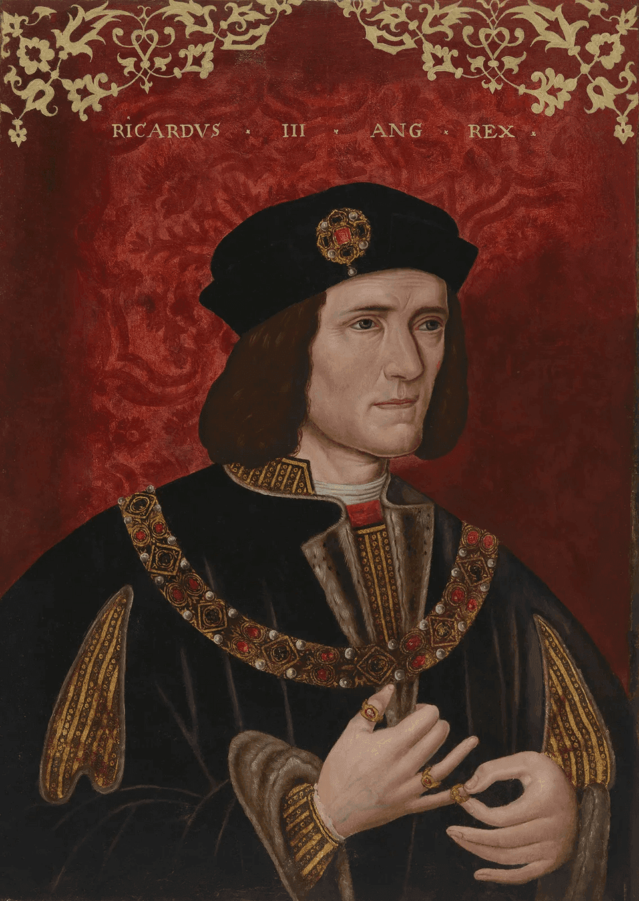
Source B: A portrait of King Richard III, painted by an unknown artist in the sixteenth century.
King Richard III tried to govern England well by passing laws to help the poor and establishing peace in the north, but the dark shadow of his missing nephews haunted his entire reign. In August 1485, the Lancastrian claimant to the throne,
Henry Tudor, set sail from France and landed on the west coast of Wales. Although Wales was traditionally Yorkist, Henry's Welsh ancestry gained him many supporters as he marched towards England. When the two armies met at
Bosworth Field on 22 August 1485, Richard III possessed a massive advantage with a fighting force nearly three times larger than Henry's.
However, Richard's royal army was undermined by extreme treachery. Two powerful factions, led by the Duke of Northumberland and Lord Stanley, stood aside on the hills, doing absolutely nothing while the battle raged. Seeing Henry Tudor isolated with only his personal bodyguard, Richard III led a desperate, heroic charge with 1,000 knights directly at his rival, killing Henry's standard-bearer and coming within a sword's length of Henry himself. Suddenly, Lord Stanley made his decision: he ordered his men to charge into the battle on
Henry's side. Richard's knights were forced into swampy ground, his horse was killed beneath him, and the king was surrounded and slain. Richard III was the last Plantagenet king of England, leaving the field as a naked, mutilated corpse slung over a horse. Henry Tudor was crowned on the battlefield as
King Henry VII, starting the Tudor dynasty and ending the Middle Ages by marrying Edward IV's daughter, Elizabeth of York, to unite the warring houses.
Q3. Create a 5-step chronological flow diagram showing the key events of the Battle of Bosworth Field, from the arrival of the two armies to the crowning of the first Tudor king.
Pair & Share Activity
Prompt: Discuss with your partner: Discuss the main topic of this lesson.
Think: Spend 1 minute quietly considering the question and forming your own opinion.
Documentary / General Notes
Title / Topic: ______________________________________________________________
L9: Lesson 9: Assessment: How powerful was a medieval monarch?
Learning Objectives
To accurately sequence the key events of the medieval period.
To evaluate differing historical interpretations of medieval royal power.
To write a structured essay explaining the decline of royal power.
Chronological Domino Flowchart
Score: / 5
Task: The historical events below are out of order. Read them carefully, then use your pen to draw arrows connecting the boxes in the correct chronological and causal order (Event A ➔ Event B ➔ Event C...).
1170
Murder of Thomas Becket
The Archbishop of Canterbury is murdered by knights loyal to Henry II.
1348
The Black Death
The bubonic plague arrives in England, killing a third of the population.
1066
The Norman Conquest
William the Conqueror defeats Harold Godwinson and unleashes the Harrying of the North.
1086
The Domesday Book
A massive survey to assess the wealth of the country for taxation.
1381
The Peasants' Revolt
Peasants rebel against the Poll Tax and demand the end of serfdom.
1215
Magna Carta
King John is forced by his barons to seal the Great Charter, limiting royal power.
Vocabulary Check
Write a clear definition and a historically accurate sentence for the term: Feudalism
Read the two historical interpretations below regarding the power of medieval monarchs. Consider what they focus on and how they differ.
Q1. Which of the two interpretations do you find more convincing? Explain your answer using your own knowledge.
[[SRC_MARKER:Lundefined_Source_1]]
William the Conqueror’s power was absolute. He ruled through fear and administration. With castles dominating every town and the Domesday Book recording every pig and cow, resistance was impossible.
Interpretation A: A modern historian writing about the early Norman period.
[[SRC_MARKER:Lundefined_Source_2]]
By 1215, the myth of absolute royal power was broken. King John’s incompetence allowed the barons to force him to obey the law, just like his subjects. By 1381, even the lowest peasants realized they had the power to shake the throne. By 1485, royal authority had completely collapsed into a 30-year civil war between rival noble houses.
Interpretation B: A modern historian writing about the Later Middle Ages.
Use this block to plan your final assessment essay. A good history essay uses a clear structure, such as PEEL (Point, Evidence, Explain, Link).
Paragraph 1: Early Norman Power
How did early monarchs show their strength? (Hint: Think about William I, castles, and the Domesday Book).
Paragraph 2: The Church and Barons
How was royal power challenged by the Church and wealthy lords? (Hint: Think about Thomas Becket, and King John sealing Magna Carta).
Paragraph 3: Peasants and Civil War
How was the crown threatened by the lower classes and dynastic rivalries? (Hint: Think about the Peasants' Revolt in 1381 and the Wars of the Roses).
Explain why royal power weakened between 1066 and 1485 (12 marks)
Hints:- Start with a clear introduction stating that while royal power was initially strong under William I, it was weakened by the Church, angry barons, and eventually the peasants.
- Use your first paragraph to explain how Magna Carta limited the King's power in 1215.
- Use your second paragraph to explain how the Peasants' Revolt (1381) and the Wars of the Roses (1455-1485) challenged the Crown's stability.
Q2. Explain why royal power weakened between 1066 and 1485 (12 marks)
Pair & Share Activity
Prompt: Discuss with your partner: Based on everything we have studied, what was the most effective way for a medieval monarch to keep their power?
Think: Spend 1 minute quietly considering the question and forming your own opinion.
Documentary / General Notes
Title / Topic: ______________________________________________________________
Generated: 2026-08-25 13:07:13 UTC | Unit: medieval_england